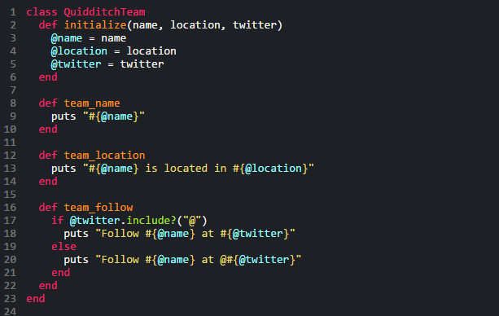
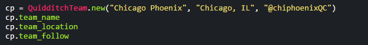
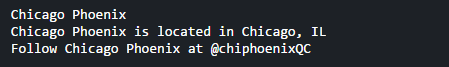
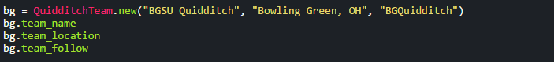
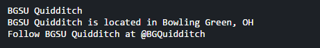

Ruby Classes
Taking you to school
7/20/15
Welcome to Class everyone! No, you don’t need a textbook or pen and paper. Today we’ll just be talking about classes in Ruby. I’d like to just tackle everything by showing you so let’s jump in!
If you’ve checked out my biography then you saw that I play quidditch. The sport is a ton of fun with teams all around the world. So many that it’s really hard to keep track. What if we were able to easily identify every team by it’s name, location, and twitter handle? Well we could easily just create a class called QuidditchTeam (class identifiers must use camel case!) that takes an input of the team name, location, and twitter. Then we can access that information as much as we want whenever we set a new instance of the QuidditchTeam class. Let’s take a look:
We started off with defining the class simply enough. Notice how arguments are not declared in the class definition? That’s because they are declared in the initialize method. Every class needs to have that initialize method where instance variables, signified by the “@” symbol, and argument errors are raised. Instance variables can be used by all of the methods in the class! Easy as pie, right? Then we move on to declaring the methods that will be used by our new quidditch team. These methods are simple enough, they just print out the information we’ve just inputed. So when we create a new QuidditchTeam and call these methods we’re able to see it in a better format!
 The code still works for a new team as well:
 And just like that you can easily access the information of any quidditch team you’d like. Classes are wonderful way to manipulate information and organize your code in an efficient way.